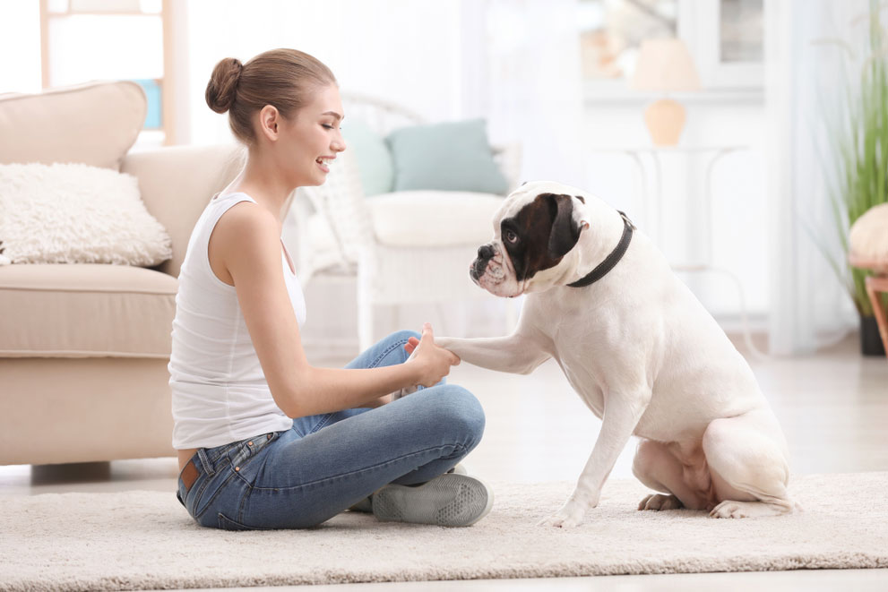
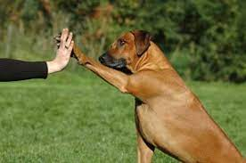

Adiestramiento en positivo
La educación en positivo o adiestramiento en positivo es educar y/o reeducar a los perros de una
forma amigable, sin utilizar métodos que incluyan malestar, dolor o miedo al animal. El objetivo
de nuestro adiestrador de perros, es enseñar al perro a través de un aprendizaje basado en una
relación de confianza entre ambos buscando su bienestar físico y emocional.
Con el adiestramiento en positivo tenemos como objetivo buscar el bienestar del perro, cubrir sus
necesidades básicas: no sólo ofrecerle una buena alimentación, un lugar para dormir y paseos
correctos, sino que, intentamos transmitir a sus propietarios o guías, que también es
imprescindible estar atentos a la parte social, cognitiva y emocional de su animal.

¿Cómo lo conseguimos?
Comunicándonos con su propio lenguaje, respetando las señales de calma, teniendo en cuenta su
tiempo de aprendizaje, su edad, sus capacidades… Para ello, usamos refuerzos positivos como
por ejemplo caricias, juegos, reconocimiento verbal, premios o simplemente con nuestra atención
para reforzar comportamientos deseados que queremos que repitan y, a la vez, procuramos
anticiparnos a aquellos momentos en los que sepamos que pueden aparecer conductas que debemos
o queremos modificar.

La educación canina que tu perro necesita
Con la educación en positivo conseguimos enseñar al perro ejercicios y habilidades concretas,
como las propias de la obediencia básica y avanzada.
En función de las capacidades y necesidades de cada perro, aconsejamos introducir un plan de
entrenamiento para que creéis una rutina de trabajo con él y consigáis aumentar su concentración,
cambiar una conducta e incluso mejorar un comportamiento concreto, ya que, al fin y al cabo,
si el adiestramiento se hace de forma positiva (sin el uso de castigos), es una forma que el
perro aprenda jugando, que se divierta, y por lo tanto, que el tándem perro-humano pasen momentos
de calidad que favorecerán a crear un buen vínculo.
Durante el proceso de aprendizaje, bajo ningún concepto añadiremos estímulos aversivos para el
perro y no le pondremos en situaciones que no pueda gestionar, en todo caso, lo trabajaremos
gradualmente para añadirle el mínimo estrés posible.

La educación en positivo crea vínculos con el animal y le enseña a pensar, no sólo a obedecer
Hay otros métodos de adiestramiento basados en la dominancia sobre el perro, en que el humano
tiene que ser el líder de la manada y que para corregir conductas inapropiadas hay que usar
el CASTIGO, pero ¿qué conseguimos con los castigos?
Hacemos a los perros más inseguros, más estresados y a veces esto desencadena en perros más
agresivos. Seguro que os habréis encontrado con la situación de regañar a vuestro perro por
algún motivo y que luego él aprenda a no repetir esa misma conducta delante de vosotros pero
sí en otras circunstancias. Esto demuestra que el comportamiento deriva en otro, no se extingue.
La educación en positivo está totalmente en contra de éstos métodos.
La relación entre humano y animal se basa en la confianza, el respeto mutuo y la empatía.
En los últimos años el término “educación canina en positivo” se ha ido malinterpretando y muchos
consideran que este método de trabajo consiste en atiborrar constantemente al perro con premios,
permitiéndole hacer lo que quiera porque no se usa el castigo, y luego en cambio moldean
comportamientos haciendo un mal manejo de correa.
En cambio, la filosofía de Perro Positivo se basa en enseñar al perro a acertar en vez de estar
constantemente corrigiendo los errores que comete, y esto…¡se puede hacer sin comida! Podemos
ponerle límites de una forma respetuosa para cumplir con las normas de convivencia.
Conocer su propio lenguaje y comunicarnos con ellos es vital para crear esta relación de confianza
y convertirnos en un referente que podrá ayudarle en las situaciones que no sepa gestionar.